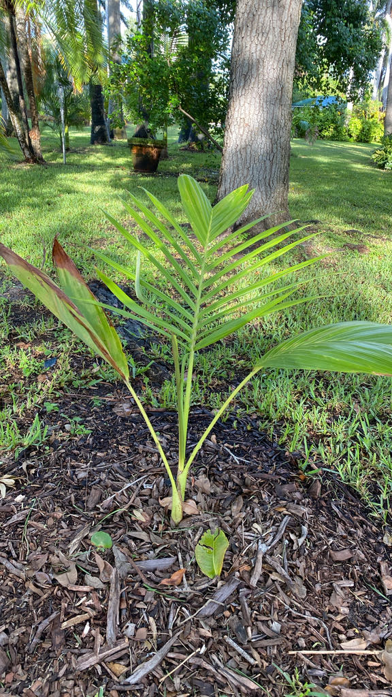

- The purple crownshaft — the smooth, tubular collar below the crown — is not equally vivid on every tree. Color develops with age, and individual specimens can range from mostly grey-green to intensely lavender-purple. Two trees growing side by side can look like different species.
- Its fruit is the largest in the entire genus Archontophoenix — a glossy crimson drupe 20 to 26 mm long, noticeably bigger than the berry-sized fruit of its close relatives the Bangalow and Alexandra palms.
- In its Queensland mountain home, this palm grows at elevations up to about 3,900 feet in cool, mist-shrouded rainforest — and that heritage shows in Florida, where it performs best with consistent moisture and some shelter from intense afternoon sun.
- The species was formally named only in 1994, relatively recent for a palm this showy. Botanists John Dowe and Donald Hodel described it from a specimen collected the year before at 1,200 meters on Mt. Lewis — among granite boulders beside a mountain stream.
- Its natural range is tiny — limited to a handful of mountain peaks in Far North Queensland — but despite that restriction, current assessments do not consider the species threatened.
The Purple King Palm is endemic to a remarkably small slice of Far North Queensland, Australia — the rainforested slopes of three adjacent mountains: Mt. Lewis, Mt. Spurgeon, and Mt. Finnigan. Within that range it grows in upland rainforest and vine forest among granite boulders, in granitic soils along creek lines, at elevations between roughly 1,300 and 3,900 feet above sea level.
In the wild it is closely associated with moist rainforest along creeks and flowing water, which goes a long way toward explaining its strong preference for consistent moisture in cultivation.
The species was formally described in 1994 by botanists John Dowe and Donald Hodel, making it one of the more recently named members of its genus. Its full genus, Archontophoenix — the King Palms — contains six species, all endemic to eastern Australia. A. purpurea has one of the most geographically restricted ranges in the genus.
Despite its tiny natural range, current extinction-risk assessments do not flag the species as threatened — an interesting contrast with some of its Queensland relatives that face greater pressure. It entered cultivation as a collector's specimen because of its distinctive crownshaft color and relative rarity in the wild.
In Florida it is now grown in warmer areas of the state, valued for its ornamental presence, though it remains far less common than its cousin the Alexandra Palm.
- What sets this palm apart from its close relatives is a combination of features found together in no other Archontophoenix: the frond undersides carry both silver-grey scales and tiny hair-like scales along the midrib — a combination that helps distinguish it from its close relatives.
- Turn a leaflet over and look closely at the midrib and you can see this combination for yourself; it is one of the details botanists use to distinguish it from the other King Palms.
- Add the distinctively colored crownshaft and the largest fruit in the genus, and identification becomes straightforward. It belongs to the same genus as the much more familiar Alexandra and King Palms, but its purple crownshaft and unusually large crimson fruit set it apart at a glance.
- The crownshaft itself ranges from blue-grey to green with a glaucous, dusty bloom and reddish flecking, often becoming more pronounced with maturity. Its intensity is variable; growing conditions, light exposure, and individual genetics all seem to play a role. A palm that looks almost green-grey in one garden may show a richer lavender-purple next door.
- At home in Queensland, this palm inhabits genuinely cool mountain rainforest — misty, humid, and a good deal cooler than Florida's coastal summer heat. That heritage makes it a better performer in sheltered spots with some shade than in the full-blast sun of an open lawn, and it appreciates consistent moisture in a way that more drought-tolerant palms do not.
The bright red fruit is the palm's main contribution to local wildlife. Fleshy and produced in pendant clusters beneath the crownshaft, the drupes are taken by fruit-eating birds, which help disperse the seeds.
The flowers are visited by insects and provide a resource for generalist pollinators when in bloom. Because this is a non-native palm with no shared evolutionary history with Florida's fauna, it has no known role as a specialist butterfly or moth host. Visitors looking for the park's best pollinator and butterfly habitat will find it among the native plantings.
Propagation is primarily by seed. The palm is monoecious — male and female flowers are produced on the same tree. Seeds are relatively large for the genus and germination typically takes six weeks to three months; seeds are best sown fresh.
Cream to yellow, small, and borne in branched, pendant clusters up to about 4.5 feet long that emerge from just below the crownshaft, at the junction where the leaf bases meet the trunk. Both male and female flowers appear on the same inflorescence. Flowering occurs in spring and summer in cultivation.
Ellipsoid to nearly round, glossy, and crimson-red at maturity — 20 to 26 mm long, with a single seed inside. The fruit is the largest produced by any member of the genus. Clusters can be quite showy against the trunk when ripe.
Pinnate (feather-shaped), arching, and up to about 13 to 20 feet long on mature trees. Individual leaflets are dark green on top and distinctly silver-grey on the underside — a feature visible when a breeze lifts the fronds. New growth sometimes emerges with a bronze tinge. The fronds are unarmed; there are no spines on the petioles.
The trunk is solitary, smooth, and gray-ringed with the scars of shed fronds, slightly swollen at the base, and can reach roughly 18 inches in diameter in large specimens. The crownshaft — the smooth, sheath-formed column below the crown — is the visual signature of this species: blue-grey to green with a glaucous bloom and reddish to purple tones that often become more pronounced with maturity.
The crownshaft is the thing to notice first — that smooth, tubular collar of tightly overlapping leaf bases just below the crown of fronds, showing its blue-grey to dusty-purple color. Flip a frond leaflet over and you'll see the silver-grey underside that distinguishes this species even among other King Palms.
If the tree is fruiting, look for the pendant clusters of glossy crimson drupes hanging just below the crownshaft — conspicuously large for a King Palm. And check the base of the trunk for the ring scars left by decades of shed fronds.
No known toxicity has been reported for this species or the Archontophoenix genus. It is unrelated to Sago Palm, a cycad that is highly toxic to people and pets — a useful distinction in any garden where both grow. The fronds are unarmed, with no spines or teeth on the petioles. The red fruit is not considered a food plant, and is not known to be toxic — otherwise harmless.
- © David Vanderbilt (CC-BY-NC), via iNaturalist